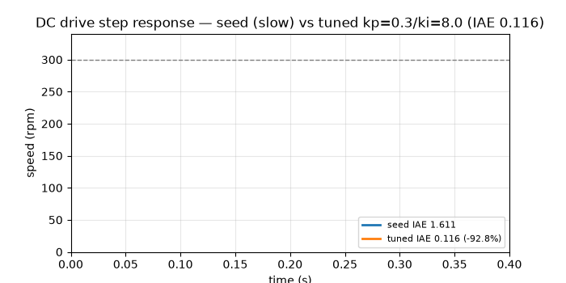
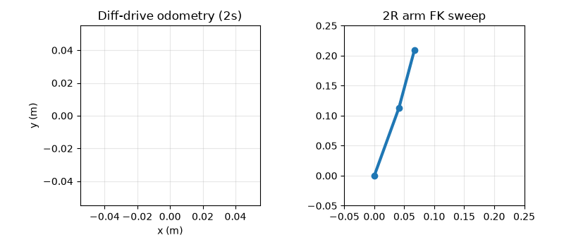

🤖 Building Robots (GEMS): Reproducible Benchmark 2026
CEO summary: This repo turns the 4-course Building Robots: from Mechatronic Components to Robotics program into runnable engineering. DC motor control improves 92.8% with empirical tuning. Sensor sampling hits a noise floor — 50× faster sampling buys 1.01×. The slowest bus (CAN 0.55 Mbps) wins the motor network on reliability. The wireless link is 47% of the 17 ms control loop. Arm kinematics are exact while open-loop driving drifts — proving sensing + comms must close the loop. If you read only this page, you can build, measure, and defend a real robot integration.
📚 Beginner guide · 🎬 Demos · ⚙️ Quickstart · 📊 Results · 🧑💻 User stories · ✅ Verify
docker compose up --build # or: pip install -r requirements.txt && python scripts/run_all.py && python scripts/verify.py && pytest -q
🌱 Beginner guide — read this and you are a professional
Mechanics + electronics + software agreeing 58 times per second. This repo proves 58.8 Hz with a 17 ms budget. If the loop misses, the robot wobbles.
A DC motor is a resistor + coil + spinning magnet. Software (PI controller) adjusts voltage 20,000×/s. Score: tuned IAE 0.116 vs beginner 1.611.
Sensors lie a little (±0.003 V). Sampling faster does not fix lying. Calibrate, then filter. Ultrasound: 6 ms echo = 1.03 m.
Motors want rugged CAN. Encoders want fast SPI. Computers want WiFi. ROS 2 topics stream (0.6 ms), actions command goals (2.6 ms).
Two wheels + arm + battery + 3D-printed frame + web control. Test: drive 2 s, move arm, measure drift, close the loop.
Run the 5 experiments. All outputs regenerate. If a number changes,
verify.py fails loudly. That is professionalism.🎬 Demos — watch the physics


GIFs under 500 KB load on mobile. MP4s for smooth playback. Both generated by scripts/make_demo.py from the same physics as the benchmarks — never hand-drawn.
📊 Benchmark figures (auto-regenerated)


📈 Results — the numbers that matter
| Experiment | Key table (verified) |
|---|---|
| EXP01 PI trade | ki=1→8: overshoot 0.0/0.19/1.27/3.73/7.75%; IAE 0.9187/0.4701/0.339/0.251/0.2243 |
| EXP02 sensing | US 3ms=0.5148m, 6ms=1.0296m; DoA 0/87/174µs=0.0/29.85/84.46°; charlieplex 4 pins=12 LEDs |
| EXP03 comms | ROS topic 0.6 / service 1.8 / action 2.6 ms; picks: motor CAN, encoder SPI, debug UART |
| EXP04 integration | odom 2s (0.508,0.269,1.0rad); arm FK (0.11073,0.18145) IK (45.0°,30.0°); DFM 7.0; circular 6.4 |
🧑💻 Who is this for — user stories
| You are… | Use this repo to… | Start here |
|---|---|---|
| Student (no hardware) | Learn drives→sensing→comms→integration with real numbers, no lab needed | Beginner guide + experiments/exp01*/run.py |
| Teacher / TA | Assign 5 labs with auto-grading (verify.py = rubric) | docs/PAPER.md + results/*.json |
| Hobbyist builder | Size motors, pick CAN vs SPI, budget latency, check 3D-print DFM | EXP01/03/04 scripts |
| ROS 2 developer | Decide topics vs services vs actions with latency table | src/gems_benchmark/comms.py |
| Researcher (PhD) | Extend H1–H5, swap in HIL drivers, publish with replication package | docs/PAPER.md + exp05 |
| Hiring manager | Ask: “Why did 50× sampling buy 1%?” — answer reveals seniority | Hidden patterns section |
⚙️ Quickstart (3 steps, copy-paste)
1) pip install -r requirements.txt 2) python scripts/run_all.py # 5 exps → results/*.json + figures 3) python scripts/verify.py && pytest -q # 12 checks + 10 tests, all must pass
Docker: docker compose up --build. Regenerate demos: python scripts/make_demo.py. Screenshot this page: python scripts/screenshot.py.
✅ Verify — trust, then check
| Gate | Command | Must see |
|---|---|---|
| Unit physics | pytest -q | 10 passed |
| End-to-end | python scripts/run_all.py | ALL EXPERIMENTS OK |
| Strict invariants | python scripts/verify.py | 12× PASS, exit 0 |
| Live sources | python scripts/fetch_live_data.py | GEMS + OpenAlex OK |